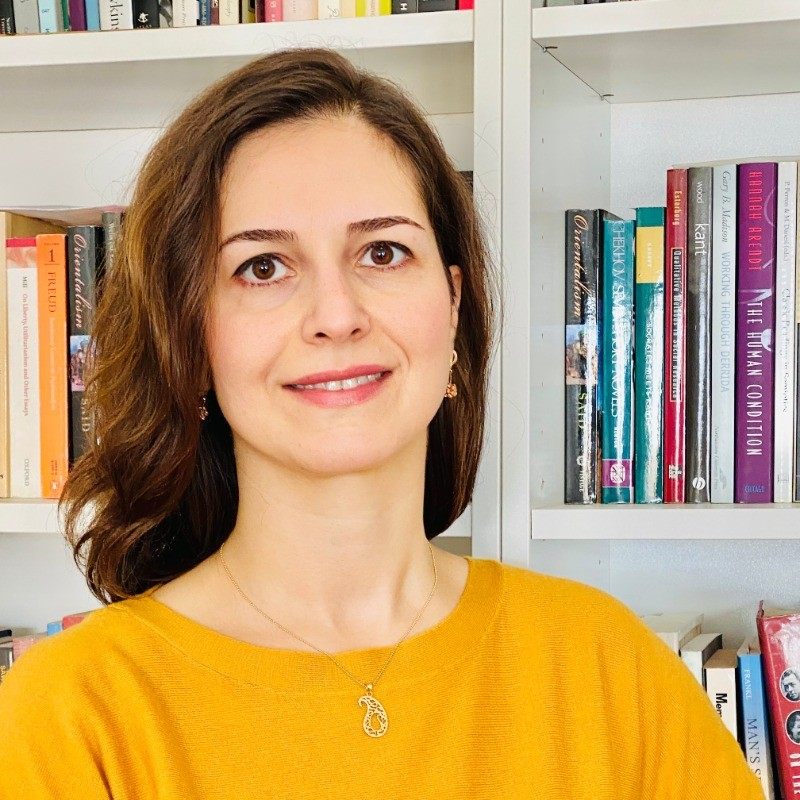

Greetings! My name is Sara Hormozinejad, and I am a researcher with the Global Migration Institute and the Bridging Divides research program, based at Toronto Metropolitan University. My project examines how naturalized citizens and eligible permanent residents in Canada understand citizenship, comparing the perspectives and experiences of those who choose to naturalize with those who opt out.
Also I am a PhD candidate in Sociology at the University of Toronto. My SSHRC-funded dissertation investigates how migration aspirations are socially constructed and transformed throughout the migration trajectory, from emigration to settlement and return. Focusing on Iranian migrants, my research foregrounds the temporal dynamics of mobility and the cultural and imaginative dimensions that shape migration aspirations across transnational contexts. Additionally, I holds an MA in Anthropology from the University of Toronto and a BA (Honours) in Anthropology from the University of Calgary.
